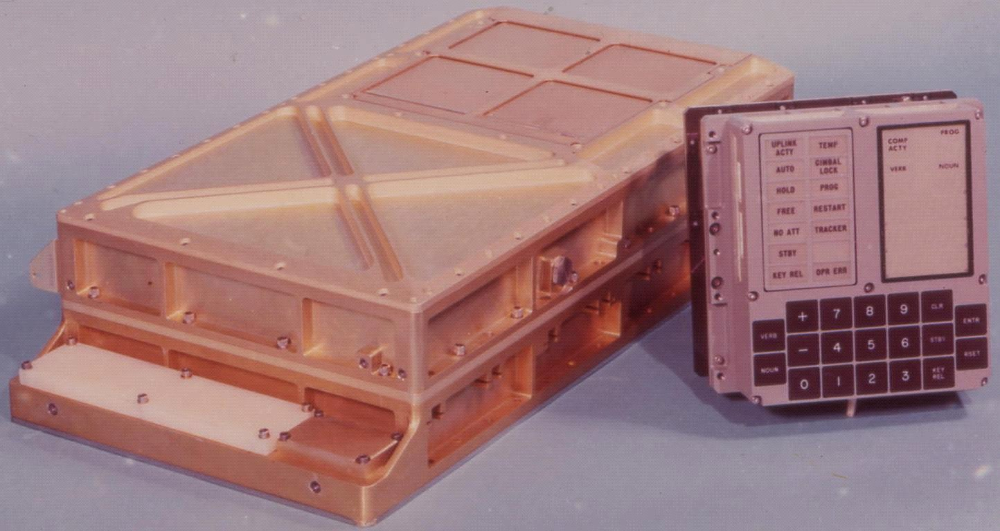
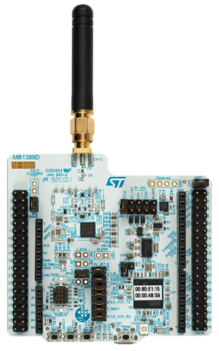
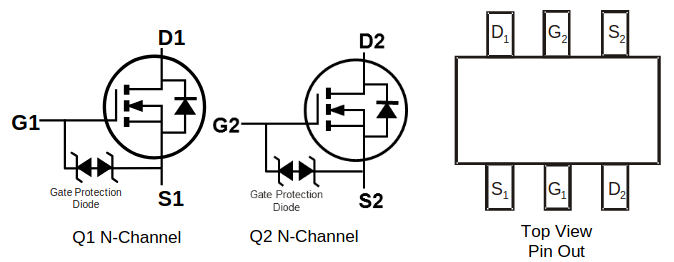
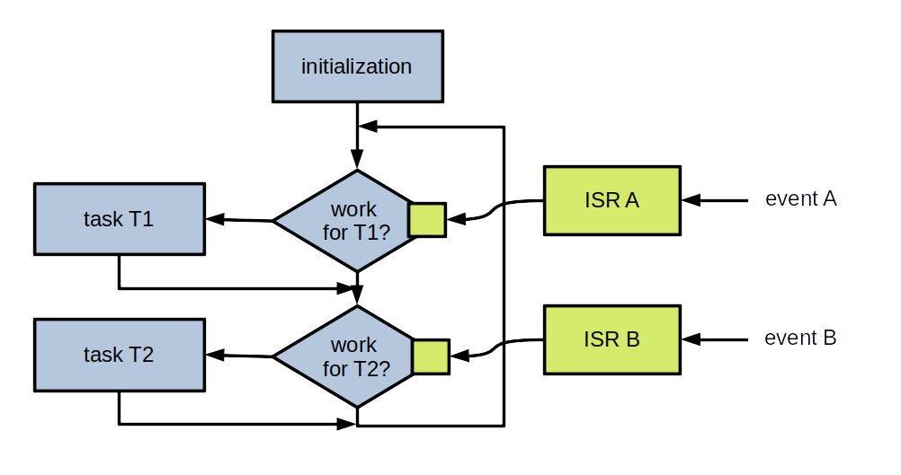

Introduction to the use of an RTOS
Pascal Bodin

Document history
| When | What |
|---|---|
| 22-Jan-2024 | UDP example added |
| 19-Jan-2024 | Scan and GATT examples added |
| 15-Jan-2024 | Exercise 18 added |
| 10-Jan-2024 | Exercise 11a added |
| 10-Jan-2024 | Reformulate first practice session |
| 09-Jan-2024 | Exercises |
| 02-Dec-2023 | Creation |
This work is licensed under a Creative Commons Attribution-NonCommercial-ShareAlike 4.0 International License
Credits
- reveal.js - Copyright (C) 2020 Hakim El Hattab
- Freepik from www.flaticon.com
How to navigate
- Use the right and left arrows (in bottom right corner)
- Overview: press "O" letter - navigate with arrow keys - "ESC" or click on slide to exit
- Full screen: press "F" letter - "ESC" to exit
Contents
Foreword
Who am I?
-
Independent consultant and freelancer - connected devices


- Beforehand: software engineer, project leader, team manager, co-founder, technical expert
- McDonnell Douglas Informations Systems, Digital Equipement Corporation (DEC), Orange
- Co-founded (and closed down) two companies
- First connected objects project: in 1990
More information
Aim
- Provide an overview of what a general purpose microcontroller is
- Provide an overview of microcontroller environment (hardware and software)
- Provide an overview of how to use an RTOS
Introduction
Hardware progress
1982 - Cray X-MP

- World most powerful computer
- 0.94 GFLOPS (giga floating-point operations per second)
- Price: around US$15 million (would be US$45 million in 2022)
2022 - iPhone 14

- 1.37 TFLOPS (GPU)
- Price: US$800
In 40 years:
- Processing power multiplied by around 1,400
- Cost divided by around 56,000
What do the years to come have in store?!
Embedded applications
1969 - The computer that made it possible to land on the Moon
- Weight: aroung 32 kg (without the user interface)
- Power supply: 28 V CC - 70 W
- Permanent memory: 36 Kwords
- Erasable memory: 2 Kwords
- Clock: 1 MHz (83 kHz instruction cycle time)
- Simple operating system, with priority handling
Compared to current configurations:
- Very little memory
- Very little processing power
Yet it allowed to bring human beings to the Moon.
It's not because you don't have a lot of memory and processing power that you can't develop great applications 🙂
A modern microcontroller with similar processing power:

- Permanent memory: 128 Ko
- Erasable memory: 8 Ko
- Clock: up to 64 MHz
- Power consumption: 30 mW (microcontroller alone)
- Power consumption in sleep mode: 0,1 μW
- Price: around US$3.00
Reminders
Reminder: computer architecture

Von Neumann architecture
- Memory stores data and instructions
- Same bus for data and instructions
Harvard architecture
- Separate memory for data and for instructions
- Bus for data and bus for instructions
Variants exist: same memory but separate buses, etc.
8-bit, 16-bit, 32-bit, 64-bit computers
Register: a memory cell inside the CPU. A CPU contains several of them.
n-bit: n is the number of bits of a register.
Reminder: computer boot process

The CPU starts executing a short program in ROM: the bootstrap.

The bootstrap loads the boot loader from a disk.

The bootloader loads the Operating System (OS) from a disk.
Of course, variants exist!
For a PC running Linux:
- bootstrap: BIOS
- bootloading:
- a first-stage bootloader is read from the Master Boot Record (MBR)
- the first-stage bootloader loads a second-stage bootloader
- the second-stage bootloader loads the Linux kernel
Reminder: virtual memory

Main functions of virtual memory:
- Provide each process with its own address space
- Ensure process isolation
- Ensure OS isolation
- Provide more memory than physical memory
Nowadays, virtual memory is implemented thanks to an MMU (Memory Management Unit).
Microcontroller board
Microcontroller
- A computer in a chip:
- Central Processing Unit (CPU)
- Read-only memory (Flash memory)
- Read/write memory (RAM - Random Access Memory)
- Peripherals and interfaces:
- Analog I/O
- Digital I/O
- Timers
- Serial links
- Serial buses
- Watchdog
- etc.
Microcontroller memory

Bootloader
- Allows easy software update
- Waits for binary data, usually provided on a serial link
- Is active only under specific conditions (pins set to some levels)
Note: depending on the µC, a software update may also be performed Over the Air (OTA)
Board architecture

- Microcontroller
- CPU + memory
- Some peripherals (e.g. timers, watchdog, etc.)
- Interfaces (serial links, serial buses, GPIO, etc.)
- Communication
- Optional
- May be hosted by the microcontroller (Wi-Fi, Bluetooth, LoRa, etc.)
- Optionally:
- Additional interfaces
- Peripherals (sensors, etc.)
- Positioning
- User interface
- Power supply management
- Data storage
- Not depicted: optional, additional memory, outside of the microcontroller
Important board/microcontroller characteristics?
- Depend on the application!
- Example:
- General Purpose Input/Output (GPIO)
- Serial links
- Serial buses (SPI, I2C, etc.)
- Analog to Digital Converters (ADC), Digital to Analog Converters (DAC)
- Analog blocks
- Instruction cycle time
- Memory (size, type, expandable...)
- Registers size (8/16/32 bits)
- Packaging
- etc.
Other important characteristics: hardware tools
- Development board
- Programmer, debugger
- Open source hardware
Other important characteristics: software tools
- Cross-compilation toolchain
- Integrated Development Environment (IDE)
- Open source software
Other important characteristics: support
- Professional support
- Active community (forums, examples...)
Some common microcontroller families
- Microcontrollers with Arm cores
- ESP8266/ESP32
- PSoC
- RISC-V
- PIC
- AVR
- MIPS32
- etc.
Arm
- UK company created in 1990
- there isn't any Arm microcontroller
- Arm provides Intellectual Property (IP) blocks, under a licensing agreement
- among these blocks: RISC microcontrollers cores
- for the IoT (low power, low cost): Cortex-M family
RISC: Reduced Instruction Set Computer
Shipped processors
- end 2020: 180 billions
- including 6.7 billions in Q4 2020
- including 4.4 billions of Cortex-M in Q4 2020
- Sep-2022: more than 250 billions
Arm processor architecture is more popular than any other architecture.
Some Cortex-M licensees:
Arm cores


Instruction sets
Provided elements
Example: STMicroelectronics - STM32 family

STM32L073RZ

- Price: US$6.95 (unit) - US$2.66 (10,000)
Development board
Price: US$13
STM32WL55


- price: US$9.25 (unit) - US$4.54 (10,000)
Development board
US$42
Example: Cypress PSoC 4200 family

Microcontroller block:
- Cortex-M0 core
- Clock: up to 48 MHz
- Memory: up to 256 KB Flash, 32 KB RAM
- USB, CAN
Analog blocks:
- Up to 4 op amp
- A/D converter, up to 1 mega samples/s on 12 bits
- Up to 6 comparators
- Up to 4 D/A converters
- Capacitive sensing
Digital blocks:
- Up to 8 universal digital blocks
- Up to 8 timers/counters/PWM blocks
- Up to 4 serial communication blocks (UART, I2C, SPI)
- Segment LCD drive
Development board

Price: US$19.94
Espressif - ESP family
Espressif family
- ESP32-S Series
- ESP32-C Series
- ESP32-H Series
- ESP32 Series
- ESP8266 Series
- Announced: ESP32-P Series
Main characteristics (depend on series)
- Single-core or dual-core (Tensilica Xtensa LX7 / Tensilica L106 / RISC-V)
- Wi-Fi 2.4 GHz / Wi-Fi 6 / Bluetooth / Bluetooth Low Energy / IEEE 802.15.4 (Thread / Zigbee)
- Many peripherals
- Vector instructions ⇒ neural network and digital signal processing
- Security
- Low power
- Software Development Kits (IoT, AI, audio, etc.)
- Low cost
Price:
- ESP32-C3FH4 - 4MB Flash - Wi-Fi + Bluetooth LE: US$1.30
Development boards

ESP32-C3-DevKitC-02 - US$8.00

ESP32-EYE - US$19.90
Software development - part 1
Cross development

With the computer:
- Edit source-code
- Cross build (cross compile and link)
- Emulate and debug
With the computer and the microcontroller board:
- Program the Flash memory
- Debug
- Every microcontroller manufacturer: full development environnement
- Often free
- Often based on Open Source software (Eclipse, gcc, etc.)
Practice: Hello World for the ESP-EYE
ESP32

Main characteristics
- Wi-Fi
- Bluetooth
- Xtensa dual core LX6
- 448 KB ROM
- 520 KB SRAM
- 16 KB SRAM in RTC
- Interface for external Flash and SRAM chips
- Timers, GPIOs, ADC, DAC, SPI, I2S, I2C, UART, Ethernet, etc.
ESP-EYE

Documentation
ESP32 development environment


If you completed the prerequisites, you should have a local copy of IMT-Atlantique-2024 repository, and Eclipse with IDF plugin installed.
If not, clone the repository, and complete the prerequisites.
Then:
- Check that connecting the ESP32-EYE creates a serial port
- Create the Hello World project
- Build it
- Flash the ESP32-EYE
- Check the log messages
Peripherals
Sensors
- Pressure
- Temperature
- Light level
- Magnetic field
- Gas flow
- Tilt
- Acceleration
- Contact
- etc.
Actuators
- Relay
- Motor
- Stepper motor
- Servomotor
- etc.
Other peripherals
- Printer
- Display
- OBD connector (On-Board Diagnostics)
- RFID tag reader
- etc. etc. etc.
Interfaces
GPIO (General Purpose digital Input Output)

It may be required to add:
- Optocoupler
- Relay
- etc.
Analog/digital conversion (ADC)

- Converting a continuous value into a discrete value
- Resolution: number of possible discrete values, or number of required bits
- Sampling frequency: number of conversions per second
- It may be required to amplify the analog signal
- Some microcontrollers include operational amplifiers (PIC16F527, PSoC 4, etc.)
Digital/analog conversion (DAC)

Serial connection
- At least 3 wires: Transmit, Receive, Ground
- Additional wires possible: Request to send, Ready for sending, etc.
- Wires definition: V.24 (RS232 in the USA)
Electrical levels:
- V.28 and RS232 : -15 V to -3 V and +3 V to +15 V
- 0 and 5 V
- 0 and 3,3 V
- Distance (V.28 and RS232): < 15 m
- Maximum speed: 20 kb/s (according to V.28)
- On short distances: 115 kb/s or more
V.28 and RS232 connectors: DB9 or DB25 D-subminiature connectors


For today's computers, serial-USB adapters


UART: Universal Asynchronous Receiver Transmitter
Data transfer:

Important:
- Each side must be configured in the same way (speed, parity, etc.)
SPI (Serial Peripheral Interface)

- Synchronous communications: clock and data
- Master/slave (or Main/Subnode)
- 4 wires:
- Clock
- Data, from master to slave
- Data, from slave to master
- Slave selection
- Full duplex

- Master side: one selection wire per slave
- A decoder can be used, or slaves can be chained
- Maximum speed: a few Mb/s
- Maximum distance: a few tens of cm
I2C (Inter-Integrated Circuit)

- Synchronous communications: clock and data
- Multi-master
- 2 wires:
- Clock
- Data
- Half duplex
- A master can determine whether the bus is idle or not ⇒ arbitration
Write operation:

Read operation:

- Maximum speed: a few Mb/s
- Maximum length: a few tens of cm
CAN (Controller Area Network)

- Designed for vehicles
- Multi-master
- Bus access: CSMA/CD+AMP (Carrier Sense Multiple Access / Collision Detection with Arbitration on Message Priority)
- Maximum speed: 1 Mb/s
- Maximum distance: a few hundreds of m (for low speed)
Software development - part 2
Practice: GPIO and button
Schematic
Datasheet
3.8.1 General Purpose Input / Output Interface (GPIO)
ESP32 has 34 GPIO pins which can be assigned various functions by programming the appropriate registers. There are several kinds of GPIOs: digital-only, analog-enabled, capacitive-touch-enabled, etc. Analog-enabled GPIOs and Capacitive-touch-enabled GPIOs can be configured as digital GPIOs.
Most of the digital GPIOs can be configured as internal pull-up or pull-down, or set to high impedance. When configured as an input, the input value can be read through the register. The input can also be set to edge-trigger or level-trigger to generate CPU interrupts. Most of the digital IO pins are bi-directional, non-inverting and tristate, including input and output buffers with tristate control. These pins can be multiplexed with other functions, such as the SDIO, UART, SPI, etc. (More details can be found in the Appendix, Table IO_MUX.) For low-power operations, the GPIOs can be set to hold their states.
For details, see ESP32 Technical Reference Manual > Chapter IO_MUX and GPIO Matrix.
ESP32 has 34 GPIO pins which can be assigned various functions by programming the appropriate registers. There are several kinds of GPIOs: digital-only, analog-enabled, capacitive-touch-enabled, etc. Analog-enabled GPIOs and Capacitive-touch-enabled GPIOs can be configured as digital GPIOs.
Most of the digital GPIOs can be configured as internal pull-up or pull-down, or set to high impedance. When configured as an input, the input value can be read through the register. The input can also be set to edge-trigger or level-trigger to generate CPU interrupts. Most of the digital IO pins are bi-directional, non-inverting and tristate, including input and output buffers with tristate control. These pins can be multiplexed with other functions, such as the SDIO, UART, SPI, etc. (More details can be found in the Appendix, Table IO_MUX.) For low-power operations, the GPIOs can be set to hold their states.
For details, see ESP32 Technical Reference Manual > Chapter IO_MUX and GPIO Matrix.
Reference Manual
4.2.2 Functional Description
To read GPIO pad X into peripheral signal Y, follow the steps below:
- Configure the GPIO_FUNCy_IN_SEL_CFG register corresponding to peripheral signal Y in the GPIO Matrix:
- Set GPIO_SIGy_IN_SEL to enable peripheral signal input via GPIO matrix.
- Set the GPIO_FUNCy_IN_SEL field in this register, corresponding to the GPIO pad X to read from.
- Configure the GPIO_FUNCx_OUT_SEL_CFG register and clear the GPIO_ENABLE_DATA[x] field corresponding to GPIO pad X in the GPIO Matrix:
- Set the GPIO_FUNCx_OEN_SEL bit in the GPIO_FUNCx_OUT_SEL_CFG register to force the pin’soutput state to be determined always by the GPIO_ENABLE_DATA[x] field.
- The GPIO_ENABLE_DATA[x] field is a bit in either GPIO_ENABLE_REG (GPIOs 0-31) or GPIO_ENABLE1_REG (GPIOs 32-39). Clear this bit to disable the output driver for the GPIO pad.
- Configure the IO_MUX to select the GPIO Matrix. Set the IO_MUX_x_REG register corresponding to GPIO pad X as follows:
- Set the function field (MCU_SEL) to the IO_MUX function corresponding to GPIO X (this is Function 2—numeric value 2—for all pins).
- Enable the input by setting the FUN_IE bit.
- Set or clear the FUN_WPU and FUN_WPD bits, as desired, to enable/disable internal pull-up/pull-down resistors.
Luckily, ESP-IDF provides an abstraction layer!


And there are examples
Last information: pullup/pulldown resistor
The schematic shows that pushing the button connects IO15 to GND.
What's the voltage of IO15 when the button is not pushed?
Not defined ⇒ any value, depending on the environment.
Right value would be: 3.3 V
This is the role of a pullup resistor.
When the button is pushed, IO15 voltage is set to 0 V (some current goes through the pullup resistor).
No need to add resistors on the board:
Pullup and pulldown resistors are available in the GPIO block, their connection is configurable.
Now, it's up to you!
- Import the
01-sideButtonPollingproject from theexercisesdirectory - Build it (to remove displayed errors)
- Understand (all) the code / ask for what you don't understand
- Perform the three
TODOtasks
Note:
- If nothing specific is done, closing or opening a switch generates bounces
- Bounces have to be filtered:
- At hardware level
- Or at software level
Practice: GPIO and LED
- Import the
02-ledHandlingproject - Add what is required to make the red LED blink 500 ms off / 500 ms on
- Hint: see next page
DMN63D8LDW
- Dual MOSFET
- Can be seen as a dual switch:
Floating-point arithmetic
Integer ranges
- With
nbits:- Signed integer:
[-2n-1, 2n-1 - 1] - Unsigned integer:
[0, 2n - 1]
- Signed integer:
Integer ranges
- 8 bits:
[-128, 127][0, 255]
- 32 bits:
[-2,147,483,648, 2,147,483,647][0, 4,294,967,296]
Problem
- How to encode:
- Very large numbers?
- Rational numbers (
2/3...)? - Irrational numbers (
...)? - Transcendental numbers (
e...)?
When are those types of numbers needed?
- Many algorithms: optimization, calculating distances, surfaces and volumes, etc.
- Many machine learning algorithms
- Simple example: calculate a long distance over the surface of the Earth
A solution: floating-point representation
sign x significand x baseexponent- The significand controls accuracy
- The exponent controls range
- Base is usually
2
A standard: IEEE 754
- Single precision: 23 bit significand, 8 bit exponent
- Double precision: 52 bit significand, 11 bit exponent
- ...
Actual IEEE 754 format
- Sign: one bit
- Significand: a decimal value greater than or equal to
1and less than2. Leading1is assumed and not encoded ⇒ actually 24 or 53 bits - Exponent: biased, so that resulting value is always positive. Bias is
127or1024
Some complexity and side effects
- Two zero values: a positive one and a negative one
- Two infinities
- NaN (Not a Number)
- Quiet NaN (⇒ indeterminate operation)
- Signalling NaN (⇒ invalid operation)
- Denormalized numbers
- Rounding ⇒ a calculation result may be different from the theorical value
Floating-point arithmetic and microcontrollers
- Low-cost microcontrollers: no instructions for floating-point arithmetic
- Other microcontrollers: Floating-Point Unit (FPU)
A software solution when no FPU
Floating-point library:
- Implements floating-point arithmetic in software
- Drawbacks:
- Increases the size of the application
- Increases the number of executed instructions
- May be distributed under paid license
Other solutions, depending on the context
- Tensor Flow: post-training integer quantization
- A short distance over the Earth's surface: integer operations are (almost) enough
- Etc.
Practice: floating point
- Import the
03-floatingPointproject - Understand what the source code does
- Build, flash, run, check the output
- Test with some other numbers
Software development - part 3
Simplifications
The ESP32 architecture is quite complex (for a microcontroller):
- Harvard architecture: data bus and instruction bus
- Different types of RAM: instruction RAM, data RAM, RTC, etc.
- Etc.
In what follows, we consider a simpler architecture.
Memory map
Flash memory from 0x0000_0000 to 0xBFFF_FFFF
RAM from 0xC000_0000 to 0xFFFF_FFFF
Some address blocks for peripherals, some with no memory, etc.
Storage allocation
uint32_t val1;
int function1(void) {
uint32_t val2;
uint8_t *mem_block;
mem_block = malloc(1024);
...
free(mem_block);
}
val1: static storage
val2: automatic storage
mem_block: dynamic storage
Static storage: allocated at program startup and stays allocated
Automatic storage: allocated when entering the surrounding block, deallocated upon exit
Dynamic storage: allocated/deallocated under the control of the program
Note: try not to use dynamic storage in embedded code!
int function1(int p) {
int temp = p * 10;
return temp;
}
int function2(int p) {
int temp = function1(p);
return temp + 3;
}
int res = function2(3);
...
At line 7: function2 needs automatic storage for
temp and its parameter
At line 2: function1 needs automatic storage for its own
temp and its parameter
At line 8: when function1 has returned, its automatic storage
can be released
At line 12: when function2 has returned, its automatic storage
can be released
Automatic storage is allocated from the stack (first in - last out).
Dynamic storage is allocated from the heap.
What happens if the program requires too much automatic storage?
The stack overwrites the heap (dynamic storage), and perhaps even statically allocated data.
At the end of the build process (compilation + linking): the amount of required static storage is known.
A default stack size is provided by the development environment. It's up to the developer to check that it is enough.
Running a program with too small a stack makes developer's life fun 🙂
Controlling stack size, and other things
The stack size can be modified in the linker script.
Additionally, the linker script tells the linker about the memory map, the heap size, etc.
⇒ It allows to generate a binary file which can be written in the flash memory at the right place.
Additionally, the linker script adds a small initialization code to the program:
- Initializes the stack pointer (pointer to top of stack)
- Initializes interrupt vectors (see further)
- Initializes some parts of the microcontroller
- Calls the
mainfunction of the program
Reset
When the microcontroller exits from reset state:
- It runs the initialization code (previous page)
Interrupt
When the program runs, several events may occur:
- A specific condition from a peripheral
- A software fault condition (e.g. undefined instruction)
- A hardware fault condition (e.g. bus error)
- Etc.
In what follows, we only consider events signalled by peripherals.
Some events
- UART:
- A byte is received
- Transmit buffer is empty
- Parity error on received byte
- Etc.
- ADC:
- Conversion done
- Etc.
- Timer:
- End of period
- Etc.
- GPIO:
- Level transition
- Etc.
From event to interrupt
The microcontroller can be configured so that (some) events generate an interrupt.
Effect of an interrupt

Context:
- Address of next instruction to execute
- Stack pointer
- Etc.
Vocabulary
Code servicing the interrupt: Interrupt Handler, Interrupt Service Routine (ISR).
Code not running in the context of an interrupt: background task.
Question: what happens if an interrupt is triggered while an ISR is servicing a previous interrupt?
Answer: it depends.
For most microcontrollers:
- Every interrupt may have a priority level (possibly configurable)
- An interrupt of a higher priority interrupts an ISR servicing a lower priority interrupt
- An interrupt of lower or equal level does not interrupt the ISR; it is saved for later servicing
Beware: only the latest interrupt of a given type is saved.
⇒ Always write short ISRs
Usual interrupt processing
- In the ISR:
- Get information associated to the interrupt
- Store it in a variable shared with the background task
- Set a flag to tell the background task that the interrupt occurred
- In the background task, for a set interrupt flag:
- Reset the flag
- Process the associated information

More detailed view
In many applications, there are not a lot of events
Question: how can energy be saved?
Answer: enter a sleep mode between two scans for events

Exiting from sleep mode


- Entering a sleep mode is important for devices without external power supply
- Usually, several different sleep modes
- The part(s) generating events must be kept active
Practice: button and interrupt
- Import the
04-sideButtonIntproject - Build it (to remove displayed errors)
- Understand (all) the code / ask for what you don't understand
- Perform the two
TODOtasks
ESP-IDF related documentation is here.
Note: this exercise shows one way to use a sleep mode.
Practice: timer and interrupt
- Import the
05-timerIntproject - Perform the
TODOtasks
Hint: in a first stage, forget about the LED. Handle it only after the timer is correctly started.
ESP-IDF related documentation is here.
Try not stopping the timer before exiting.
What happens? Why?
Practice: bare metal application architecture
Functional specifications:
- The red LED may be in one of two states: blinking or not blinking
- To make the LED transition from one state to the other one, the user has to press the side button twice in less than one second
- Import the
06-btnLedproject - Understand (all) the code / ask for what you don't understand
Note: very simple application, but provides an idea about the general architecture of a bare metal application.
The code does not fully comply with the specifications:
void btn_task_run(void) {
if (!press_detected) {
return;
}
// At this stage, the button has been pushed.
press_detected = false;
...
All pushes between the test at line 3 and the assignment at line 8 are ignored.
Possible solution: will be seen farther.
Execution environments
Execution environment: what the target board provides to run an application.
Bare metal
- You write all the code, without any help to run concurrent tasks, to share data between tasks, etc.
- Nowadays, an abstraction layer is provided by almost all
microcontroller manufacturers:
- ⇒ Compatibility over a family of microcontrollers
- ⇒ A little bit easier to use peripherals and interfaces
- Arm: CMSIS
- STMicroelectronics: HAL + LL
- Etc.
What we did in the practical sessions is not far from bare metal.
Real-Time Operating System (RTOS)
- Provides real help to run concurrent tasks, share data between tasks, etc.
- Allows for deterministic response time
- Uses very little memory
- No protection between tasks, nor between tasks and RTOS (no virtual memory)
- No way to modify the application without rebuilding and reflashing (well, not fully true)
Minimum required memory:
- RAM: a few KB
- Flash: a few KB
- Depends on the application

- FreeRTOS acquired by Amazon - 2017
- ThreadX acquired by Microsoft - 2019
- Transferred to the Eclipse Foundation, as open source - 2023
- Google and Meta support Zephyr
Available services: will be seen farther.
Actually, ESP-IDF is built upon FreeRTOS.
Operating System (OS)
- Mainly: Linux
- Similar to a desktop computer environment:
- Package manager, to install new applications
- Graphical user interface is possible
Minimum required memory:
- RAM: a few MB or a few tens of MB
- Depends on applications
Usually:
- RAM: from 512 MB to 8 GB
- Flash card: from 1 GB to 8 GB
- Linux typically requires an MMU (Memory Management Unit) ⇒ virtual memory
- The kernel can be configured to work without one
- Thanks to μClinux project
- Beware about applications compatibility

- Yocto: allows creation of Linux distributions
- balenaOS: Docker containers
- LYNX MOSA.ic: hypervisor
This type of environment targets boards similar to desktop computer motherboards.
By default, a standard OS can't provide deterministic response time. It's not its job.
Next part: RTOS.